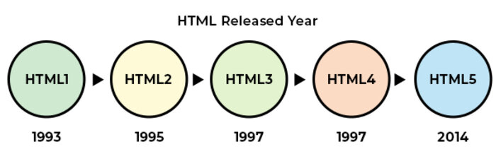

Em 1991, o cientista da computação Tim Berners-Lee, que trabalhava no CERN (Organização Europeia para Pesquisa Nuclear), criou a World Wide Web (WWW). O objetivo era facilitar o compartilhamento de informações entre cientistas de diferentes países. Para tornar isso possível, ele criou o HTML (HyperText Markup Language), uma linguagem de marcação usada para estruturar páginas da web. O HTML permite organizar textos, imagens, links e outros elementos dentro de uma página. Graças ao HTML, as informações podem ser acessadas facilmente por meio de navegadores.
